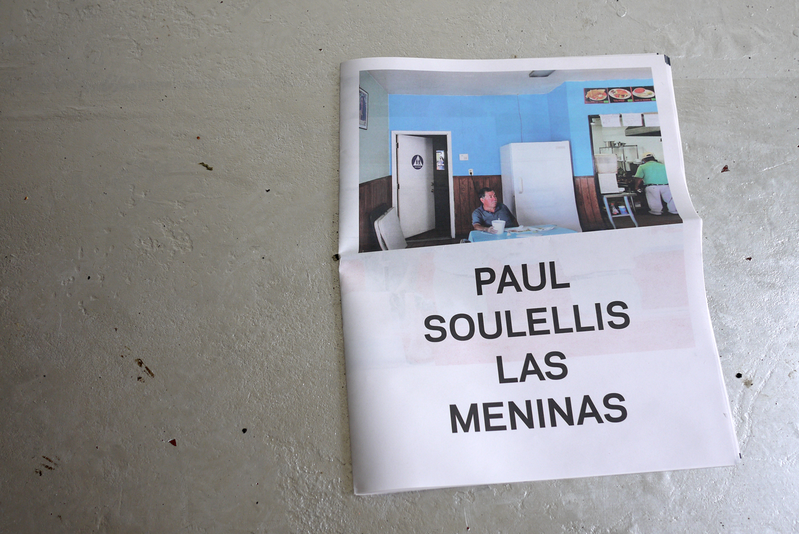
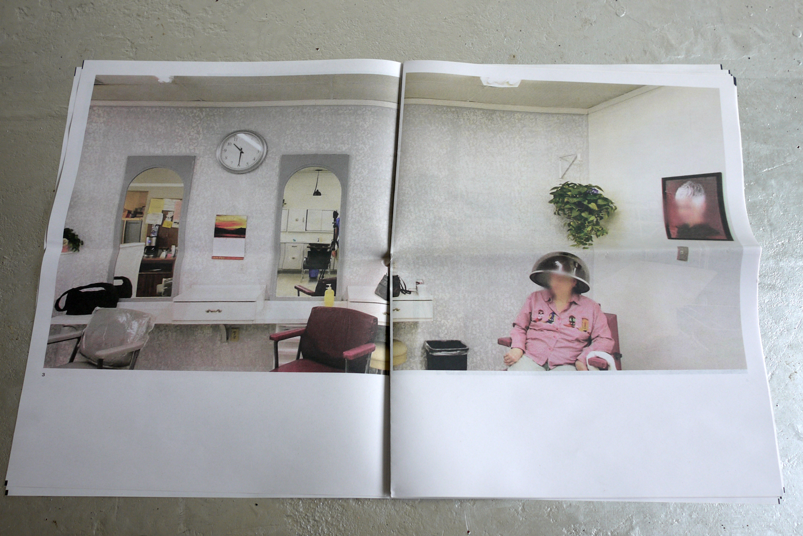
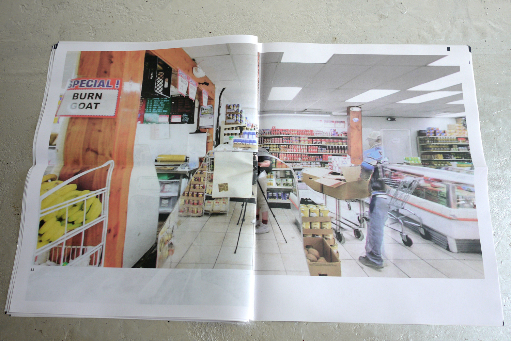
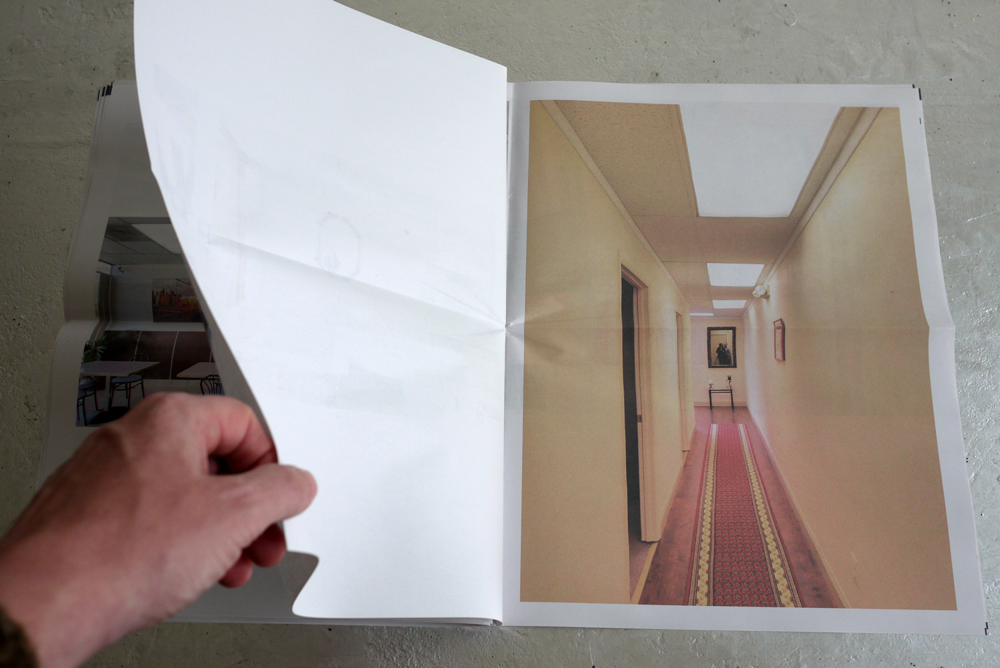
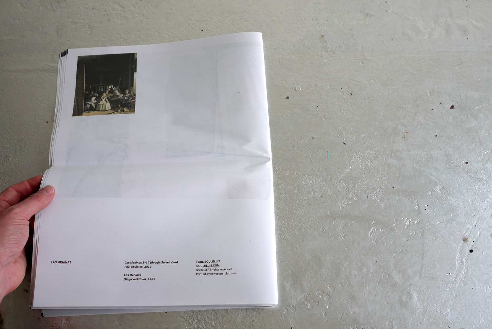

Las Meninas (2013)

Las Meninas is a series of 17 photographs depicting the photographer and/or camera’s reflection visible in mirror or glass. All of the photographs are taken using Google Street View (interior views).

The relationship between image-maker, viewer, frame, and apparatus is ambiguous, and plays out differently from scene to scene. The series suggests hidden (as well as revealed) connections to power both inside and outside the frame.

In Las Meninas the re-framed mirror presents a utopian ideal (the perfect view(er) of commerce) as well as heterotopian uncanniness (the displaced, disembodied, powerless view(er)), recalling Velázquez’s Las Meninas (1656).
32 pages (17 images)
Digital print-on-demand tabloid newsprint
Numbered and signed edition of 50 (sold out)

